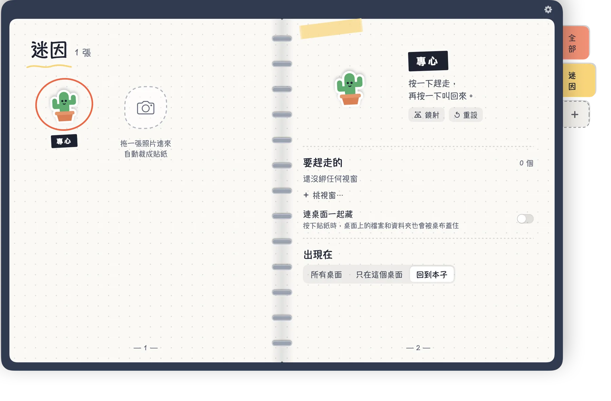
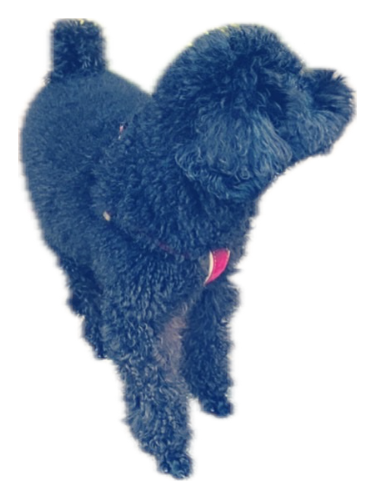

貼在 Mac 桌面上的貼紙本子
按一下貼紙，視窗通通藏起來。
把 Shoo 貼在桌面上，告訴它要管哪些 App 或視窗。按一下全部藏起來，再按一下，全部回到原來的位置。
每張貼紙都管著這一頁的一部分，按按看。
按一下，桌面就乾淨了。
試試看：選一個情境，再按一下小惡魔。
按我！
做成你自己的
任何照片都能做成貼紙——你的狗、你的朋友、你最愛的迷因——再讓每一張負責不同的事。

把照片拖進本子或直接點一下照片
- 把照片拖進來，Shoo 在你的 Mac 上直接去背
- 用自己的分類標籤和顏色整理貼紙
- 每張貼紙藏自己那一組視窗
怎麼用
三個步驟，不用設定畫面。
1
撕一張貼紙
從本子把貼紙拖出來，貼在桌面任何地方。
2
指給它看
選「挑視窗…」，點一下這張貼紙要管的視窗或 App。
3
按一下，Shoo！
按貼紙全部藏起來，再按一下叫回來。
用起來順手的小地方
所有事都在你的 Mac 上、在本子裡完成。
- 單一視窗或整個 AppSafari、Chrome、備忘錄、Finder 可以只藏一個視窗，其他 App 整個藏。
- 連桌面一起藏貼紙生效時，用你自己的桌布蓋住桌面上的檔案。
- 所有桌面或只在這個桌面貼紙可以出現在每個桌面，也可以只留在一個。
- 在本子裡直接改改名、調大小、旋轉、鏡射，都在看得到的地方。
- 不佔位置Shoo 可以顯示在 Dock、選單列，或都不顯示。
- 六種語言English、繁體中文、简体中文、日本語、한국어、ไทย。
免費開始
小惡魔免費送你，所有功能都能用。其他的一次買斷，不用訂閱。
免費
紅色小惡魔
- 一張貼紙就有全部功能
- 藏視窗、藏 App、連桌面一起藏
- 所有語言

解鎖完整版一次買斷
- 另外 5 款手繪貼紙
- 用自己的照片做貼紙
- 自訂分類標籤和顏色
- 想做幾張就做幾張
常見問題
為什麼 macOS 會問要不要讓 Shoo 控制 Safari、Chrome、備忘錄或 Finder？
這是 Shoo 只藏那個 App 某一個視窗的方法。Shoo 只會叫那個 App 把你指定的視窗藏起來或叫回來。如果你選不允許，Shoo 會改成整個 App 一起藏。
任何 App 都能藏嗎？
可以。任何 App 都能整個藏起來；只藏單一視窗目前支援 Safari、Chrome、備忘錄、Finder。
要訂閱嗎？
不用。Shoo 免費，附小惡魔貼紙；解鎖全部是一次買斷。